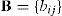
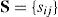
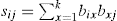
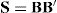
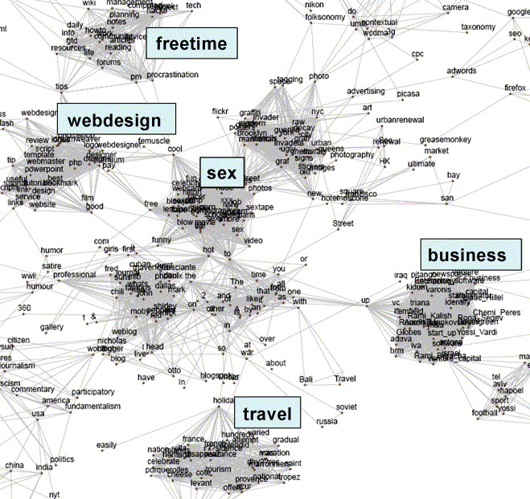
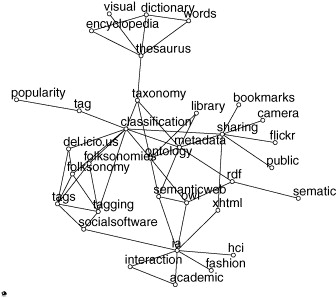
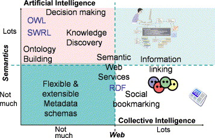

Ontologies are us: A unified model of social networks and semantics
- Department of Computer Science, Vrije Universiteit Amsterdam, 1081 HV Amsterdam, The Netherlands
- Received 22 June 2006. Revised 27 November 2006. Accepted 30 November 2006. Available online 1 February 2007.
Abstract
In our work the traditional bipartite model of ontologies is extended with the social dimension, leading to a tripartite model of actors, concepts and instances. We demonstrate the application of this representation by showing how community-based semantics emerges from this model through a process of graph transformation. We illustrate ontology emergence by two case studies, an analysis of a large scale folksonomy system and a novel method for the extraction of community-based ontologies from Web pages.
Keywords
- Knowledge representation;
- Folksonomies;
- Tagging
1. Introduction
According to the most cited definition of the Semantic Web literature, an ontology is an explicit specification of the conceptualization of a domain [1] . Guarino clarifies Gruber’s definition by adding that the AI usage of the term refers to “an engineering artifact, constituted by a specific vocabulary used to describe a certain reality, plus a set of explicit assumptions regarding the intended meaning of the vocabulary words” [2] . An ontology is thus engineered by – but often for – members of a domain by explicating a reality as a set of agreed upon terms and logically-founded constraints on their use.
Conceiving ontologies as engineering artifacts allows us to objectify them, separate them from their original social context of creation and transfer them across the domain. Problems arise with this simplistic view, however, if we consider the temporal extent of knowledge. As the original community evolves through members leaving and entering or their commitments changing, a new consensus may shape up invalidating the knowledge codified in the ontology.
To address the problem of ontology drift, several authors have suggested emergent semantics as a solution [3] . The expectation is that the individual interactions of a large number of rational agents would lead to global effects that could be observed as semantics. Ontologies would thus become an emergent effect of the system as opposed to a fixed, limited contract of the majority. While the idea quickly caught on due to the promise of a more scalable and easily maintainable Semantic Web, the agreement so far only extends to the basic conditions under which emergence would take place. The vision is a community of self-organizing, autonomous, networked and localized agents co-operating in dynamic, open environments, each organizing knowledge (e.g. document instances) according to a self-established ontology, establishing connections and negotiating meaning only when it becomes necessary for co-operation. Beyond the reasonable belief that individual actions in such a semantic-social network would lead to ontology emergence, there is a lack of an abstract model of such a system that could also explain the process of emergence. Thus there appears to be a large conceptual gap in the literature between the vision and the details of implementations of various semantic architectures based on P2P, Grid, MAS and web technology.
In this paper, we take a step back and formulate a generic, abstract model of semantic-social networks (Section 2), which we will call the Actor–Concept–Instance model of ontologies. This model is built on an implicit (albeit crucial) realization of emergent semantics, namely that meaning is necessarily dependent on a community of agents. Inspired by social tagging mechanisms, we represent semantic-social networks in the form of a tripartite graph of person, concept and instance associations, extending the traditional concept of ontologies (concepts and instances) with the social dimension. We will show how lightweight ontologies of concepts and social networks of persons emerge from this model through simple graph transformations. In Section 3, we will demonstrate these effects based on two independent, large scale datasets. In Section 4, we evaluate one of our emergent ontologies (the result of a social-network based ontology extraction process) against the results of the traditional method of ontology extraction based on co-occurrence. Lastly, we conclude with a discussion of future work in Section 6.
2. A tripartite model of ontologies
While expert systems designed for centralized, controlled environments benefit greatly from the increasing expressivity of ontology languages such as OWL, especially in domains that lend naturally to formalization such as engineering and medicine, lightweight ontologies expressed in RDF(S) have spread and caught on in the loosely controlled, distributed environment of the Web [4] .
The tendency towards lightweight, easily accessible mechanism for ontology and metadata creation is best evidenced by the recent appearance of folksonomies. Folksonomy (from folk and taxonomy) is a neologism for a practice of collaborative categorization using freely chosen keywords. Folksonomies (also called social tagging mechanisms) have been implemented in a number of online knowledge sharing environments since the idea was first adopted by social bookmarking site del.icio.us in 2004.
The idea of a folksonomy is to allow the users to describe a set of shared objects with a set of keywords of their own choice. What the objects are depends on the goal of the site: while bookmarks are the object of classification in del.icio.us, photos are shared in Flickr, scientific publications are tagged in CiteULike, while 43Things allows users to share their goals and plans (e.g. to travel or loose weight) by annotating their descriptions with keywords and connecting users with similar pursuits.1
It is important to note that in terms of knowledge representation, the set of these keywords cannot even be considered as vocabularies, the simplest possible form of an ontology on the continuous scale of Smith and Welty [5] . First, the set of words is not fixed. In fact, the users form no explicit agreement at all about the use of words, not even in the form of incremental, need-based, local and temporary agreements suggested by the research on emergent semantics [3] . Yet, the basic conditions of emergent semantics are given and as we will show there is semantics emerging at the scale of these systems. Second, although we use the term concept in the following, it is clear that there is no one-to-one correspondence between concepts and keywords. It is not always possible for the users to express a complex concept with a single keyword and thus they may use more than one tag to express the concept association that the item brings up in them. Lastly, the instances of folksonomies are instances only in the sense of classification.
In order to model networks of folksonomies at an abstract level, we will represent such a system as a tripartite graph with hyperedges. The set of vertices is partitioned into the three (possibly empty) disjoint sets A={a1,…,ak}, C={c1,…,cl}, I={i1,…,im} corresponding the set of actors (users), the set of concepts (tags, keywords) and the set of objects annotated (bookmarks, photos, etc.). In effect, we extend the traditional bipartite model of ontologies (concepts and instances) by incorporating actors in the model.
In a social tagging system, users tag objects with concepts, creating ternary associations between the user, the concept and the object. Thus the folksonomy is defined by a set of annotations T⊆A×C×I. Such a network is most naturally represented as hypergraph with ternary edges, where each edge represents the fact that a given actor associated a certain instance with a certain concept. In particular, we define the representing hypergraph of a folksonomy T as a (simple) tripartite hypergraph H(T)=〈V,E〉 where V=A∪C∪I, E={{a,c,i}|(a,c,i)∈T}.
Tripartite graphs and hyperedges are rather cumbersome to work with. However, we can reduce such a hypergraph into three bipartite graphs (also called two-mode graphs) with regular edges. These three graphs model the associations between actors and concepts (graph AC), concepts and instances (graph CI) and actors and instances (graph AI). For example, the AC valued bipartite graph is defined as follows:
In words, the bipartite graph AC links the persons to the concepts that they have used for tagging at least one object. Each link is weighted by the number of times the person has used that concept as a tag. This kind of graph is known in the social network analysis literature as an affiliation network [6] , linking people to affiliations with weights corresponding to the strength of the affiliation. An affiliation network can be used to generate two simple, weighted graphs (one-mode networks) showing the similarities between actors and events, respectively. (At this point it is recommended to dichotomize the graph by applying some threshold.)
The process of folding a bipartite graph (the extraction of a one-mode network) can be most easily understood by looking at the
matrix form of the graph. Let’s denote this matrix as . As discussed before,
bij=1 if actor ai
is affiliated with concept cj. We define a new matrix , where . In matrix notation . This matrix, known as
the co-affiliation matrix, defines a social network that connects people based on shared affiliations. In our case the links
are between people who have used the same concepts with weights showing the number of concepts they have used in common. The
dual matrix, is a similar graph
showing the association of concepts, weighted by the number of people who have used both concepts as tags. Note that in both
graphs the diagonal of the corresponding matrices contains the counts of how many concepts or persons a given person or concept
was affiliated with in the bipartite graph. We can use these values to normalize the association weights (e.g. by calculating
the Jaccard-coefficient) and then filtering again based on the relative weights. In case of the  social network, for example, this means that we have taken into account the relative
importance of the link between persons.
social network, for example, this means that we have taken into account the relative
importance of the link between persons.
In summary, the AC graph, the affiliation network of people and concepts can be folded into two graphs: a social network of users based on overlapping sets of objects and a lightweight ontology of concepts based on overlapping sets of communities. Thus in this simple model, social networks and semantics are just flip-sides of the same coin: the original bipartite graph contains all the information to generate these networks, while it is not possible to re-generate the original graph from them.
The other two bipartite graphs that we derived from the original tripartite model can also be folded into one-mode networks in a similar fashion. In particular, the CI graph leads to another semantic network, where the links between terms are weighted by the number of instances that are tagged with both terms. This type of semantic network is a much more familiar kind: it mimics the basic method applied in text mining, where terms are commonly associated by their co-occurrence in documents. The AI graph results in another social network of persons, where the weight of a pair is given by the number of items they have both tagged. We also get a network of instances, with associations showing the number of people who have tagged a given pair of instances.
In the following we focus our attention on the two lightweight ontologies based on overlapping communities (Oac) and overlapping sets of instances (Oci).2 The analysis of the emergent social networks is outside the scope of the current paper.
2.1. Ontology enrichment
The community-based lightweight ontology Oac that we extract from the affiliation network is rather peculiar from a knowledge representation perspective. Unlike the manually constructed thesauri known in the Semantic Web literature (such as Wordnet [7] ), it more closely resembles the association thesauri studied in linguistics. An example is the Edinburgh Associative Thesaurus (EAT),3 which was collected in 1973 via an experiment using a group of university students as subjects [8] . The experiment consisted of handing a list of words to students who were instructed to write down against each stimulus word the first word it made them think of, working as quickly as possible. The obtained words were used in a next round of the experiment. (The cycle was repeated three times, by then the number of different responses was so large that they could not all be re-used as stimuli.)
Our associative ontology is similar to the EAT in that the weights of the links between terms are expressed as the number of people who make that association. The difference is that in the EAT collection, people are prompted explicitly to create links between concepts, while we deduce such links by observing tagging behavior. More importantly, however, both methods have the crucial property that the result clearly depends on the community of people who take part in experiment. The method of ontology engineering is particularly revealing, because once the initial set of words is selected there is only one parameter to the process: the population chosen. (In particular, the knowledge engineer has no other role than handing out questionnaires and collecting the responses.) Some of the results are likely to hold for other communities (like the overwhelming reaction of saying Noah when hearing the word ark), but many of the aggregated associations are driven by the collective mind set of the subjects of the experiment. A collective mindset that is likely shaped by the well-known law of community formation: interaction creates similarity, while similarity creates interaction.
We cannot only repeat the experiments with different communities, but given some information about the social structure of the community, we could also extract local ontologies by limiting our tripartite ontology to the associations of a certain sub-community of actors. Note that this is the principle of locality in action, one of the expected hallmarks of emergent semantics [3] . We will demonstrate this effect in Section 3.2 where we extract an ontology of research topics in the Semantic Web domain.
In modern terms, the EAT is an emergent ontology based on empirical data. Unlike ontologies that are meant to codify fixed agreements, all graphs that we derive are also emergent in the sense of evolving dynamically with the Actor–Concept–Instance network. Changes in the original network can occur in a number of ways. Users may join or leave the community, changing the set of actors. The focus of the community may shift, affecting the set of items tagged and the concepts used. Last, the understanding and use of terms may change, reflecting in the set of associations between concepts and instances created by the users.
Although our association networks are very simple ontological structures, there are several opportunities of enriching them with additional semantics. We start by observing that a significant drawback of the EAT is the heterogeneity of terms. Our emergent ontologies will also likely to contain a diverse mixture of specific and generic terms, i.e. terms that we can unambiguously place in a clearly defined context (e.g. instances such as Peter) and terms that can occur in multiple contexts of use (e.g. war). From a network view, general words are therefore more likely to bridge different clusters of words, while specific terms are expected to exhibit a dense clustering in their neighborhood. This suggest an opportunity to distinguish between these two categories by computing the clustering coefficient, the (local) betweenness centrality or the network constraint on our terms [6] and [9] . These well-known ego-network measures of Social Network Analysis are readily available in popular network analysis packages such as Pajek [10] and UCINET [11] . Based on the same observation, we also expect that clustering algorithms can help us in finding synonym sets of the more specific terms. There is a wide range of clustering algorithms available in the above mentioned network analysis packages, based on different definitions of cohesiveness.
We may also extract broader/narrower term relations typical of thesauri using set theory. In an ideal situation, we would say that Concept A is a super-concept of Concept B if the set of entities (persons or items) classified under B is a subset of the entities under A(B⊆A⇋A∩B=B). We might also add the criterium that the set of A should be significantly larger then the set of B, i.e. |B|/|A|<k for some value of k. In principle, such an ordering allows us to define a Galois lattice using the subset relation. In practice, such a lattice would be very sparse (considering the number of entities and the number of possible subsets over them), so we will approximate this method by looking for near-perfect overlaps, i.e. |A∩B|/|B|<n for some value of n. Finding appropriate values for the k, n parameters of the model is the task of the researcher.
The reader should note that the meaning of these broader/narrower relations are very different, depending on whether we analyze the Oci or the Oac ontology. In the first case, the interpretation is that all (or most) of the items classified under the narrower term also appear under the broader term. In other words, what we extract is a classification hierarchy. In the second case, the meaning is that all the persons associated with the narrower term are also associated with the broader term. In other words, we extract a hierarchy based on sub-community relationships.
3. Case studies
In the following, we demonstrate the broad applicability of the Actor–Concept–Instance model of ontologies by looking at two different semantic social networks. Our first data set comes from an existing web-based social bookmarking tool called del.icio.us (Section 3.1), while the second case is built on synthetic data obtained by using web mining techniques (Section 3.2). We will show how the abstract model applies to the particular cases and demonstrate our method of ontology emergence based on the graph transformation described above.
3.1. Ontology emergence in del.icio.us
According to the definition of author Joshua Schachter, del.icio.us is a social bookmarking tool. Much like the similar functions of browsers, del.icio.us allows users to manage a personal collection of links to web sites and describe those links with one or more keywords. Unlike stand-alone tools, del.icio.us is a web-based system that allows users to share bookmarks with each other. Bookmarks can be browsed by user, by keywords (tags) or by a combination of both criteria. Further, the user interface encourages exchange by showing how bookmarks are linked together via users and tags. In terms of the Actor–Concept–Instance model, registered users of del.icio.us are the actors who create or remove associations between terms and webpages (instances) by adding or deleting bookmarks.
From the perspective of studying emergence, del.icio.us is remarkable for the dynamics of its user base. The young, technologically aware community gathering around the site closely follows the latest news and trends in web technology as well as the evolving vocabulary of the field. Beyond technology, del.icio.us users also post-bookmarks related to current topics in politics, media, business and entertainment. The emphasis on timeliness is reinforced by listing bookmarks in a backward-chronological order as it is typical for blogs.
The process of annotation is made as easy as possible. A single textbox allows users to enter a set of words without any recommendations made by the system. On the downside, this means that synonyms are common in the folksonomy, e.g. “semanticweb”, “semweb” are different keywords. Ambiguity is also present, since users often pick overly general terms to describe items (such as “web”, “tool” and other popular terms). Further, users often make the mistake to enter key phrases instead of keywords (e.g. “Bill Clinton”), where the words are subsequently parsed as separate tags (“Bill” and “Clinton”); or they escape the one-word-only limitation by concatenating words. Case sensitivity and the use of punctuation marks further pollute the del.icio.us namespace. However, at the scale of system (over 30 thousand registered users in December 2004) the imperfections of tagging are reduced to an acceptable level. On the plus side, users benefit from instant gratification in the form of linkage to other relevant, timely, socially-ranked posts.
del.icio.us exposes tagging data in the form of RSS feeds, which we have collected using a focused RDF crawler. The crawler was initialized with the single most popular tag (“web”) and have traversed the RSS network in a breadth-first-search manner, following links to tags mentioned in the descriptions of items. The sample data that we collected – over a million triples of RDF – was stored using the Sesame storage and query facility [12] . The sample represents 51,852 unique annotations of 30,790 URLs, by 10,198 persons using 29,476 unique tags.4
Next, we have generated both the Actor–Concept and Concept–Instance graphs. In order to scale down the dataset (without loosing much information) and to avoid strong associations with a low support we have filtered out those entities that had only a minimal number of connections, i.e. those tags that had less than ten items classified under them and those persons who have used less than five concepts.
Subsequently, we have extracted the above mentioned two kinds of ontologies by folding these graphs using the network analysis package Pajek. As a reminder, the first ontology (Oac) is based on actors sharing concepts as interests, i.e. the associations reflect overlapping communities of interests, while the second network (Oci) reflects the co-occurrence of tags on items. We have filtered the networks based on the absolute strength of associations. Next, we applied geometric normalization to the resulting graphs and filtered edges again based on the relative strength of the associations. We have chosen the thresholds in such a way to obtain networks of equal size (438 concepts). Fig. 1 shows a high level view of the Oci graph, Fig. 2 shows a detailed view of the Oac graph.
- 
-
Fig. 1. The del.icio.us tags associated through co-occurrence on items and the clusters emerging.
- 
-
Fig. 2. Detail view of the del.icio.us tags associated through users: a three-neighborhood of the term ontology. Note that the term sematic is correctly associated, despite the obvious typo.
The results show clear evidence of emerging semantics in both cases, but the networks we obtain still show very different pictures. With an equal number of vertices, the densities of the two networks are quite different (0.01 for the Oci network, 0.006 for the Oac network), and so is the amount of clustering present (the average clustering coefficients are 0.2 and 0.03, respectively).
The selection of concepts in the two networks is also very different: only 64 concepts are present in both networks of the total of 438 nodes in each graph. (A sample is included in Table 1.) A closer look reveals that the concepts within the clusters of the first network are often very specialized terms, while those in between the clusters are overly general terms. A look at the terms with the lowest clustering and highest betweenness centrality confirms this hypothesis. The top five terms with highest betweenness are up, cool, hot, in, to. Noticeable also is that the terms with the highest clustering and lowest network constraint are those related to sex. As mentioned before, the second network shows much less clustering: overly general and overly specific terms are both missing.
-
Table 1. Terms starting with “A” or “a” in the two lightweight ontologies generated from the del.icio.us network
-
Oci */GoogleHacks, _0, 04, 1, 2, 2005, 3g, a, A, a9, Aaron_Mankovski, actona, actors, adult, aduva, advice, ajax, all, Allegrini, america, an, and, angeles, apparel, Apple, as, assembly, attempt, attention, attention.xml, aviv, axml, azur Oac .net, 3d, 43folders, academic, accessibility, acronym, actionscript, activism, ad, ads, adsense, advertising, advice, advisories, adwords, agile, ajax, amazon, america, analysis, and, Apache, apache, api, app, apple, application, architecture, archive, Art, art, articles, asia, astronomy, atlas, Audio
The clue to the different qualities of these networks lies in the difference in the way associations are created between the concepts. In the first case, there exist a strong association between concepts if they share a large percentage of items, independent of the number of users interested in them and regardless if these associations were added by the same users or not. The resulting distribution of association weights shows a very slow decline, the average weight is fairly high. In the second case, there is a strong association in the network if two concepts share a large fraction of the users among them, independent of the number of instances associated with them and regardless whether these terms were added to the same instances or not. The resulting weight distribution shows a very steep decline, the average weight is fairly low.
This suggest that the first network (Oci) is more appropriate for concept mining. In fact, a λ-set analysis performed with UCINET on a slightly larger network of 751 concepts resulted in meaningful clusters of specific terms, representing various domains of interests in the del.icio.us community. At a level of λ=20, we found five cohesive groups of concepts that we identified as interests related to travel, business, free time, porn and web design (see Fig. 2 and Table 2).
-
Table 2. The five main clusters of interest based on the Concept–Instance network
-
travel cote, provence, villa, azur, mas, holiday, vacation, tourism, france, heritage business venture_capital, enterprise, up, start, venture, newspaper, capital, Segev, pitango, vc free time procrastination, info, advice, gtd, life, notes, planning, daily, reading, forums sex hot, to, street, pictures, on, photos, free, celeb, adult, lesbian web design design, designer, webdesign, premium, logo, logos, dreamweaver, templates, best, good
However, the Oci semantic network ignores the relevance of the individual concepts from the user perspective and as such it gives an inaccurate picture of the community. Concepts related to sex, for example, get a misleadingly high centrality in the network due to the specificity and extent of the vocabulary used to describe sex-related sites. On the other hand, the more evenly distributed community-based network (Oac) contains concepts that are actually important to del.icio.us users. These concepts almost all come from the computer domain, the apparent core interest of users. The strength of links between the concepts are also a more accurate representation of reality as they are not biased by the actual number of items that have been tagged with them.
The ignorance of the item-based extraction method towards the number of users also makes it problematic to extract taxonomic relations. Namely, many of the relations we extracted are based on the word usage of a small number of users, and in the worst case a single user. The Concept–Actor ontology yields much more easily interpretable results, shown in Table 3. As discussed before, these are sub-community relations: the community associated with a narrower term is a sub-community of the community associated with the broader term. Nevertheless, even here we find an association created by a single story marked by a large number of users. This suggests an improvement to our original method, namely filtering out concepts that have only a limited number of items or persons associated to them. We take this into account as we move on to generalize our method to community-based ontology extraction from Web pages.
-
Table 3. Broader/narrower term relations in the technology domain, based on sub-communities in del.icio.us
-
Broader Narrower rss atom cmyk rgb cell umts, wcdma, ev-do phone cell ajax json xml xslt rdf owl flickr gmail, picasa ruby rails mac iphoto java j2ee google gds search a9, engine linux ubuntu, gnome flash actionscript flickr lickr, photoset javascript xmlhttprequest, dom, sarissa
We conclude by noting the potential application of the results to improving del.icio.us itself, e.g. by offering search and navigation based on broader/narrower terms. Considering the dynamics of the community and the extent of neologism, the ontologies emerging from folksonomies such as del.icio.us also have a large potential for enriching established, but slowly evolving linguistic ontologies such as Wordnet (Table 3).
3.2. Community-based ontology extraction from Web pages
Folksonomies such as del.icio.us are effective, because they attract sizeable sub-communities of users pursuing similar interests. Nevertheless, the community of del.icio.us is still a niche compared to the general web population, just as the number of web sites tagged is only a fraction of the number of pages on the Web.
We would like to show in the following that even without explicitly assigned tags, it is possible to extend the idea of community-based ontology extraction to the Web. Let’s suppose that we have a selected a community, whose members will play the role of Actors in our model, and we have prepared a list of terms whose associations we are interested in. The instances of our model are the pages of the Web. Further, we assume that a web page is tagged by a concept if the concept occurs on the page.
Based on these assumptions, the Concept–Instance ontology is straightforward to create: we can use a search engine to obtain page counts for all pairs of concepts and then normalize by their separate page counts. This is the basic co-occurrence analysis method of text mining.
Generating the Actor–Concept ontology requires another broad assumption. We will say that there is an association between a concept, a person and a web page if the name of the person and the label of the concept co-occur on the page. This association represents a weaker commitment than in the case of folksonomies, because it is not guaranteed that the association is made by the person. Nonetheless, we can now generate the bipartite graph of persons and concepts by measuring the association using page counts from the search engine.
First, we measure the association between a person (e.g. “Peter Mika”) and a concept (e.g. “Semantic Web”) by submitting a Boolean query combining the two terms (e.g. “Peter Mika” AND “Semantic Web”). We normalize the result with the number of pages where the concept occurs. We then repeat this with the same concept and the names of all other members of the target community. We calculate the mean strength of association with the concept of “Semantic Web”. Lastly, we associate those members of the community with this concept whose association strength is at least one standard deviation higher than the mean. (Note that this is a slightly more sophisticated method of filtering than a general threshold.) We can now fold the bipartite graph of actors and concepts to obtain the Oac ontology.
Our method of community-based ontology extraction have been implemented as part of the Flink system. The system is a web-based presentation of the social networks and research interests of Semantic Web researchers.5 The community of researchers represented in Flink includes all authors, program committee members and organizers of all past international Semantic Web events from 2001, altogether 607 persons. The system extracts the social network of researchers as described in [13] and associates them with research topics using the search engine Google.
Flink can also be used to perform co-occurrence analysis and generate the Oci ontology. We improve the basic method by adding the disambiguation term “Semantic Web” OR ontology to the queries sent to the search engine, limiting the items returned to those relating to the Semantic Web.
The resulting ontological structures are not included here due to limitations of space, but we strongly encourage the reader to consult them online.6 To make the networks comparable, we have included only the 100 strongest associations in each network. Again, we see a significant difference in the set of concepts remaining in the networks. Namely, from the original 60 terms (selected manually from the proceedings of the ISWC events), the method of text mining found the strongest associations between more general terms. Specific concepts related to the Semantic Web seem to float to the periphery and are misplaced in general. For example, the term FOAF is related to XML and OWL-S, technologies not directly related to FOAF. Annotation is related to alignment and databases. The term ontology is associated, among others, with HTML, XML and databases, concepts not directly related to the understanding of ontologies in the Semantic Web community.
The Oac association network represents a clear improvement in these respects. The method found correct associations between domain specific concepts. For example, the term FOAF is linked here to Redland and Sesame, the triple stores preferred by FOAF developers for their scalability. Terms related to ontology languages (OWL, RDF, OIL, DAML+OIL, ontology languages, etc.) are correctly clustered together, just as the technologies related to ontology storage (query languages, triple stores), with terms related to ontology development (OilEd, OntoEdit, ontology development) connecting the two clusters. More general technologies are also placed correctly in context, i.e. corresponding to the way they are used in the Semantic Web. For example, NLP is tied to the notions of annotation and ontology learning.
The difference in the node sets can be explained in a similar way as in the case of del.icio.us: the Oci network ignores the overall relevance of these concepts to the Semantic Web community. Considering the associations, we believe that there is another effect in play. By querying the associations of persons first and then linking concepts through overlapping communities, we simulate the effect of first asking the members of the community to associate themselves with certain research interests and then relating these interests through overlapping communities. Overlapping communities turn out to be a stronger link than overlapping sets of web pages. A possible explanation is that even after including the disambiguating term in the query, the search engine still suffers from knowing too much, blurring away community-specific interpretations.
4. Evaluation
In absence of a golden standard, evaluating the results of ontology learning or ontology mapping is a difficult task: inevitably, it requires consulting the community or communities whose conceptualizations are being learned or mapped. In order to evaluate our results, we have thus approached in email 61 researchers active in the Semantic Web domain, most of whom are members of the ISWC community and many of them are in the graph-theoretical core of the community.7 The single question we asked was In terms of the associations between the concepts, which ontology of Semantic Web related concepts do you consider more accurate? Lacking a yardstick, there is no principled correct answer to this question that we expected to receive. Instead, we were interested to find out if there is a majority opinion emerging as an answer and if yes, which of the two ontologies (produced by the two different methods) would that majority accept as more accurate.
Many respondents expressed difficulty in answering the question due to the (intentional) lack of further explanations or instructions, e.g. what the associations mean, but also due to the very different node sets of the two semantic networks. Nonetheless, out of the 33 respondents only three persons were not willing to express any preference (even if a slight one) for one network or the other. Twenty-three respondents were members of the ISWC community and 15 of them belong to the core of the community.
The distribution of the answers for the various subgroups are summarized in Table 4. First, taking all responses into account, we can conclude that the participants consider the Oac network as a more accurate representation of associations between the concepts than the Oci network (the result is significant at a level of p=0.01). The majority vote becomes even stronger if we consider only the members of the ISWC community, i.e. the persons whose name has been used to extract the semantic network. Thus as a second finding we can also conclude that the Oac network is considered more accurate particularly by those whose names were used in the extraction process. The results become even more conclusive if we only consider the votes from the core members of the community. Based on this finding and assuming a continuum, we can state that the Oac network better reflects the conceptualizations of those closer to the core of the community. Combined together, our findings confirm that the Oac network better reflects the conceptualizations of those involved in Semantic Web research, and this holds especially for those most actively involved in Semantic Web research.
-
Table 4. Results for the comparison of the community-based (Oac) and item-based (Oci) ontology extraction methods
-
N Oac Oci Ratio (%) Significance All 30 22 8 73.3 0.0055 ISWC 23 18 5 78.3 0.0040 ISWC-core 15 13 2 86.7 0.0032
5. Discussion: ontologies and folksonomies
This paper has been first published at the Fourth International Semantic Web Conference (ISWC) held in Galway, Ireland in November 2005. The appearance of this paper was the starting sign for an important discussion in the Web community about the place of folksonomies in the Semantic Web vision. This discussion still carries on today.8 Unfortunately, it is often trivialized into a slogan-level debate contrasting Web 2.09 and the Semantic Web. This debate between proponents of folksonomies and controlled vocabularies (ontologies) gives the impression as if a single choice would need to be made between competing ways of bringing semantics to the Web.
We would like to argue here that there is no need to make such a choice: in fact, folksonomies are ontologies. To understand why, it is useful to revisit some of the fundamental characterizations of ontologies from the literature. For example, based on reports from others on various uses of ontologies Smith and Welty characterize ontologies as a set of representation mechanisms that can be classified according their expressivity as shown in Fig. 3[5] . They note that there is a point on this scale (marked with the black bar) where automated reasoning becomes useful: this is the point where the ontology at least has a stable hierarchy, allowing to reason with subclass relations. Elst and Abecker propose a three-dimensional classification of the formality, stability, and sharing scope of knowledge [14] ). In other words, it is difficult if not impossible to obtain knowledge that is formal, but also dynamic and widely shared. As shown in Fig. 5, this classification is simplified into two dimensions in our own survey of ontology-based Knowledge Management [4] , where ontology-based applications are classified according to their level of expressivity (the Semantic dimension) and their level of distribution10 (the Web dimension). We also noted based on the evidence of existing applications that it seems difficult to go forward along both dimensions simultaneously: highly formal knowledge requires commitment that is difficult to achieve in a large scale, while ontologies that are widely shared (lightweight web ontologies such as RSS and FOAF) are necessarily shallow due to their sharing scope. Stability, although not a separate dimension, also clearly plays a role in this: large scale systems like the Web are very dynamic, while achieving significant ontological commitment (formality) would require stability. This classification has been widely used since, e.g. populated with applications and technologies as in Fig. 6. As expected, existing work is situated in the upper left or lower right corners of the matrix, while the theoretically problematic upper right corner is empty.
- 
-
Fig. 6. The classification instantiated with technologies. As expected, the upper right corner is empty. Source: Carole Goble, University of Manchester.
If we interpret the term ontology to cover the whole spectrum, it is easy to show that folksonomies simply represent different positions on the scales than the more formal controlled vocabularies traditionally employed by the Semantic Web community. Folksonomies are lightweight, in fact so light that many in the Semantic Web community consider them ‘useless’ in the sense that automated reasoning using logical approaches cannot be applied (i.e. folksonomies are to the left of the bar on the scale of Fig. 3). However, as we have shown in this work there is more semantics in folksonomies than meets the eye. The methods to extract it are not logic based, but borrowed from network analysis and in fact folksonomies may require a shift in the methods applied by the Semantic Web community.
Folksonomies are also dynamic– changing over time with every tagging action – as opposed to the more stable structures that most semantic applications are built on. Again, many would argue that this renders folksonomies useless for any purpose other than knowledge discovery. For example, one may not want to describe the parameters of a web service using a folksonomy because such a web service could not be relied on by dependent services.11 We note here, however, that in practice folksonomies are much less volatile than many would expect. We believe that the majority of terms has a single well-defined meaning that remains stable over long periods of time. Also, while the objects tagged may change on a daily basis, the overall focus of the del.icio.us community, for example, changes much slower. Although investigating the temporal dimension of folksonomies is subject of future work (the work of Dubinko et al. in visualizing tags over time is an important step in this direction [15] ), we expect that folksonomies have a substantial stable backbone if we observe them for longer periods of time. Much like ontologies that stabilize after long, heated debates, these stable parts of folksonomies can in fact be considered as lightweight ontologies that represent a consensus over the meaning of terms.
In terms of sharing, folksonomies have a very limited scope compared to ontologies. Due to their dynamics and lightweight nature, the mapping of folksonomies is a predictably difficult, if not impossible challenge. Tagging systems at the moment represent islands of semantics that do not cross the boundaries of a single website. Even if we could capture, for example, the relationship between the tag ruby on del.icio.us and the same tag on Flickr that mapping would need to be just as volatile as the semantics of the terms themselves.
Lightweight, dynamic and limited in sharing scope, folksonomies are a different kind of ontology than the more formal and stable controlled vocabularies advocated by the Semantic Web community for the Web. Their applications are also different and thus they are unlikely to replace or even compete with logic-based approaches. Folksonomies, however, will have a significant impact on realizing the original vision of the Semantic Web as an enrichment of the current Web. In particular, it is the first time that the barriers of providing knowledge have been lowered to such an extent that ordinary users are willing to provide metadata on web resources on a large scale.
Although the semantics is much more implicit, the collective actions of a large number of individuals can still lead to the emergence of semantics. Furthermore, the metadata in tagging systems comes with an important new attribute, namely the identity of the individuals who have associated a certain tag with a certain object. This social dimension of ontologies and its effects on semantics has been the subject of our paper.
6. Conclusions and future work
The Semantic Web is a web for machines, but the process of creating and maintaining it is a social one. Although machines are helpful in manipulating symbols according to pre-defined rules, only the users of the Semantic Web have the necessary interpretive and associative capability for creating and maintaining ontologies. Ontology creation necessitates a social presence as it requires an actor to reliably predict how other members of the community would interpret the symbols of an ontology based on their limited description. With incorporating the notion of semantics into the web architecture, we have thus made the users of the system a critical part of the design.
We have argued elsewhere for a three layered view of the Semantic Web, namely the layer of communities and their relations, the layer of semantics (ontologies and their relations) and the layer of content items and their relations (the hypertext Web) [16] . In this paper we have formalized this view as a tripartite model of ontologies with three different classes of nodes (actors, concepts, and instances) and hyperedges representing the commitment of a user in terms of classifying an instance as belonging to a certain concept. We have shown the usefulness of this model by generating two kinds of association networks: the well-known co-occurrence network of ontology learning and a novel semantic network based on community relationships. Among the future work is the study of the two emerging social networks, based on object and concept overlaps.
The general advantage of the incorporation of the social context into the representation of ontologies is the possibility of studying emergence from user actions. Emergent semantics is likely to best complement well-established, but slowly evolving ontologies such as WordNet [7] , which lack the associative component.12 We have also compared the two networks based on object and person overlap and noted the advantage of the second network: the possibility to extract semantics pertinent to a sub-community of the user network. In some sense, this is the opposite of mining general knowledge from search engines as in the work of Cimiano et al. or Etzioni et al. [17] and [18] . In comparison to these systems, our community-based ontology extraction has a great potential in extracting ontologies that more closely match the conceptualization of a particular community. For example, when trying to find associations between concepts used by the Web Services community, it is natural to consider only the associations created (explicitly or implicitly) by those involved in developing Web Services. As we have shown, using this method the resulting ontology is more likely to be accepted as accurate by the community itself.
It seems that ontologies are us: inseparable from the context of the community in which they are created and used. A greater acknowledgement of this state – by incorporating the link between actors and concepts into the model of ontologies – have only benefits to bring in terms of more meaningful and easily maintainable conceptual structures. While we are only at the beginning of realizing these benefits, there is a clear magic as we see semantics emerge from the individual actions of a community at work.
References
-
- [1]
-
Towards principles for the design of ontologies used for knowledge sharing
-
N. Guarino, R. Poli (Eds.), Formal Ontology in Conceptual Analysis and Knowledge Representation, Kluwer Academic Publishers, Deventer, The Netherlands (1993)
-
- [2]
-
Formal Ontology in Information Systems
-
IOS Press (1998)
-
- [3]
- K. Aberer, P. Cudré-Mauroux, A.M. Ouksel, T. Catarci, M.-S. Hacid, A. Illarramendi, V. Kashyap, M. Mecella, E. Mena, E.J. Neuhold, O.D. Troyer, T. Risse, M. Scannapieco, F. Saltor, L. de Santis, S. Spaccapietra, S. Staab, R. Studer, Emergent semantics principles and issues, in: Database Systems for Advanced Applications Ninth International Conference, vol. 2973 of LNCS, DASFAA, 2004, pp. 25–38.
-
- [4]
-
Towards a new synthesis of ontology technology and knowledge management
-
Knowledge Eng. Rev., 19 (4) (2004), pp. 317–345
-
- [5]
-
Ontology: towards a new synthesis
-
Formal Ontology in Information Systems, ACM Press, Ongunquit, Maine (2001), pp. iii–x
-
- [6]
-
Social Network Analysis: Methods and Applications
-
Cambridge University Press (1994)
-
- [7]
-
C. Fellbaum (Ed.), WordNet—An Electronic Lexical Database, MIT Press (1998)
-
- [8]
-
An Associative Thesaurus of English and Its Computer Analysis
-
Edinburgh University Press (1973)
-
- [9]
-
Structural Holes: The Social Structure of Competition
-
Harvard University Press (1995)
-
- [10]
-
Pajek—program for large network analysis
-
Connections, 21 (2) (1998), pp. 47–57
-
- [11]
- S. Borgatti, M. Everett, L. Freeman, Ucinet for Windows: Software for Social Network Analysis, Analytic Technologies, Harvard.
-
- [12]
-
Sesame: an architecture for storing and querying RDF and RDF schema
-
Proceedings of the First International Semantic Web Conference (ISWC 2002), no. 2342 in Lecture Notes in Computer Science (LNCS), Springer-Verlag (2002), pp. 54–68
-
- [13]
-
Social networks and the semantic web: an experiment in online social network analysis
-
Proceedings of the IEEE/WIC/ACM International Conference on Web Intelligence, Beijing, China (2004)
-
- [14]
-
Ontologies for information management: balancing formality, stability, and sharing scope
-
Expert Syst. Appl., 23 (4) (2002), pp. 357–366
-
- [15]
-
Visualizing tags over time
-
http://www2006.org/programme/files/pdf/25.pdf Proceedings of the 15th International World Wide Web Conference, Edinburgh, UK (2006)
-
- [16]
-
Social networks and the Semantic Web: the next challenge
-
IEEE Intell. Syst., 20 (1) (2005), pp. 80–93
-
- [17]
-
Towards the self-annotating web
-
Proceedings of the 13th International World Wide Web Conference, New York, USA (2004), pp. 462–471 http://wwwconf.ecs.soton.ac.uk/archive/00000573/01/p462-cimiano.pdf
-
- [18]
-
Web Scale information extraction in know it all (preliminary results)
-
Proceedings of the 13th International World Wide Web Conference, New York, USA (2004), pp. 100–111 http://www2004.org/proceedings/docs/1p100.pdf
- 1
-
del.icio.us, http://www.flickr.com, http://www.citeulike.org, http://www.43things.com.
- 2
-
Recall that
 , where
, where  with bij=1 if actor ai
is affiliated with concept cj; and
with bij=1 if actor ai
is affiliated with concept cj; and  , where
, where  with dpq=1 if concept cp
is used to tag the instance iq.
with dpq=1 if concept cp
is used to tag the instance iq.
- 3
-
Consult the EAT online at http://www.eat.rl.ac.uk/.
- 4
-
This is a sample of the complete data set because the RSS feeds expose only the latest 30 items for each tag. Further, we stopped crawling after reaching this size. To our knowledge this is still the largest ontology annotation data set ever studied.
- 5
-
Flink itself uses Semantic Web technology and is the winner of the Semantic Web Challenge of 2004. See http://flink.semanticweb.org and http://challenge.semanticweb.org.
- 7
-
We performed a categorical core/periphery analysis with correlation optimization using UCINET 6 based on the connected part of the Flink social network data (N=528), available at http://prauw.cs.vu.nl:8080/flink/graph. The results show a clear C/P structure with 63 persons in the core and 465 persons on the periphery.
- 8
-
See for example the panel discussion at the 15th World Wide Web Conference (WWW2006) held in Edinburgh, UK, or the similarly titled panel at the 5th International Semantic Web Conference (ISWC2006) held in Athens, GA.
- 9
-
Web 2.0 is a mix of design ideas, technological innovation in building web application and an entirely different conceptualization of web sites as community places. Common to many Web 2.0 websites, however, is the use of folksonomies as user generated models of the domain.
- 10
-
Not in a physical sense, but in terms of the authority/control over the knowledge.
- 11
-
Another Web 2.0 trend, the opening up of service APIs and the appearance of mash-ups in fact point to the timeliness of Semantic Web technology for the Web.
- 12
-
For example, according to WordNet the distance of the terms Noah and ark is quite large: their closest common ancestor in the hypernym tree is object, physical object. Yet, the Edinburgh master’s students overwhelmingly associate the term Noah with ark and vice versa. The association is so strong in fact (78 and 79% of all terms mentioned in response, respectively) that it is safe to say that in the mind of the students these terms are solely defined by each other, in the context of the biblical story of Noah’s ark.